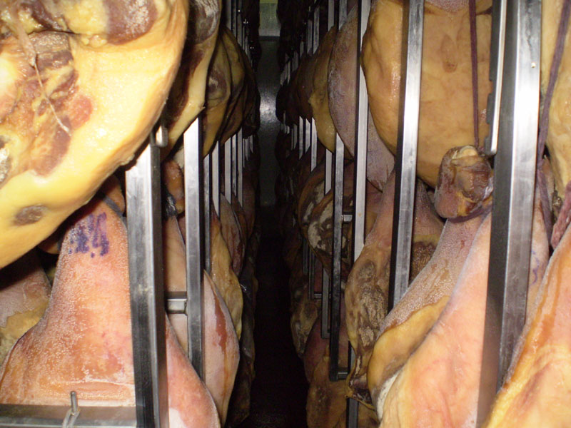
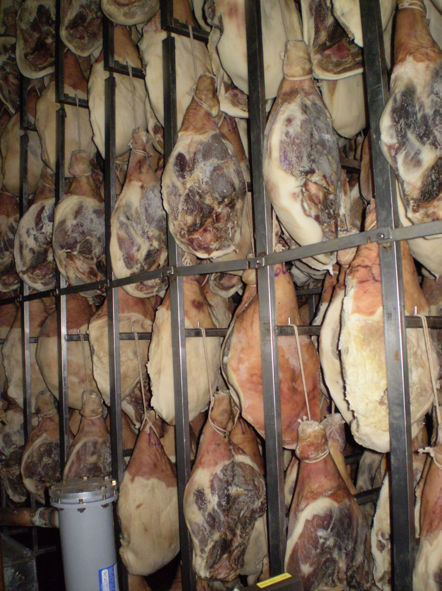

El auténtico sabor de la tradición
Nuestros jamones, cocidos y crudos, reflejan décadas de dedicación artesanal. Cada bocado es sinónimo de calidad y excelencia argentina con raíces españolas.
Nuestros jamones, cocidos y crudos, reflejan décadas de dedicación artesanal. Cada bocado es sinónimo de calidad y excelencia argentina con raíces españolas.


Más de 55 años dedicados al jamón
Frigorífico Sarria nació en 1969, cuando un matrimonio proveniente de Galicia decidió traer a la Argentina no solo sus ilusiones, sino también una tradición de trabajo y pasión por la buena mesa. Con esfuerzo y visión, compraron un pequeño terreno en la localidad de Santos Lugares, Buenos Aires, donde comenzaron a elaborar sus primeros jamones.
Lo que empezó como un emprendimiento modesto, con pocos empleados y una producción artesanal, fue creciendo con el tiempo gracias al compromiso de la familia y la confianza de sus clientes. A lo largo de los años, se sumaron nuevas propiedades, maquinarias e infraestructura, que permitieron transformar aquella pequeña fábrica en un frigorífico de referencia en el mercado argentino.
Hoy, más de 55 años después, seguimos siendo una empresa familiar, 100% argentina, dirigida por sus fundadores junto a sus hijos, manteniendo intactos los valores de calidad, tradición y dedicación.
Nuestra especialidad son los jamones crudos, reconocidos por su sabor y excelencia, junto con una línea de productos cocidos que responden a los más altos estándares de control y seguridad. Cada pieza que sale de nuestras cámaras es el resultado de una historia de esfuerzo, pasión y compromiso con la calidad que nos acompaña desde el primer día.

Curación lenta y natural que garantiza calidad y sabor únicos.

El mejor jamón crudo, con aroma y textura inconfundibles.

Más de 55 años elaborando jamones bajo estrictos controles.
Si tenés consultas sobre nuestros productos, distribución mayorista o requerimientos comerciales, no dudes en ponerte en contacto con nosotros.
Santos Lugares Buenos Aires AR,
Calixto Oyuela 1795
+54 9 11 3600-7105
ventas@frigorificosarria.com